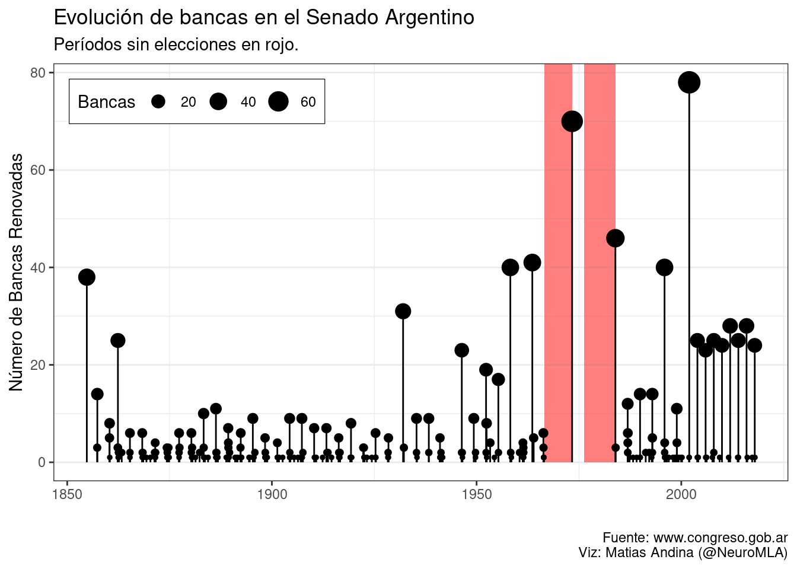
Hace rato que vengo viendo ciertas tendencias de gente que hace algo de análisis de datos con la actualidad Argentina. Por ejemplo, Daniel Schteingart comúnmente publica este tipo de análisis en diversos medios. Esto me llevó a buscar datos abiertos disponibles para jugar un rato.
En general, a mí me interesa más debatir sobre la implementación de políticas y pienso que el Poder Legislativo merece mayor atención. Siento que sobrestimamos (para bien y para mal) el poder de un Ejecutivo que es, al final del día, mucho menos determinante que aquellos que escriben las leyes según las cuales se rige el Estado. Exigimos representantes que nos representen.
Senadores
Wikipedia dice: “El Senado es el órgano federal por excelencia del país, donde cada senador representa los intereses de su provincia.”. Basta con leer la introducción del artículo para recordarse a uno mismo por qué es tan importante tener un Senado que funcione. Entre otras tareas sin mundanas, aparentemente el Senado tiene la potestad de “autorizar al presidente de la Nación para que declare el estado de sitio” y de asegurar una correcta distribución de los recursos federales. Quizás cuesta entender por qué los requisitos para ser Senador son tan bajos1.
Pues bien, entonces comencemos por el Senado ya que tiene, además, la base de datos más completa. Antes que nada, un pequeño repaso sobre cómo se eligen los representantes y la duración de sus mandatos.
Elecciones. La cámara de Senadores se renueva por tercios cada dos años. Los senadores son electos directamente por el pueblo. Los mandatos de los senadores son por seis años y pueden ser reelegidos en sus funciones indefinidamente.
Las bases de datos utilizadas en este artículo son de acceso público. La base de datos de Senadores puede encontrarse en www.senado.gov.ar y www.congreso.gob.ar.
Senadores por período
Empecemos mirando cómo evolucionaron las bancas a lo largo de nuestra historia. Vemos un comienzo con algo de recambio, seguido de un período con bajo recambio. A partir de 1930, empezamos a ver los vaivenes de un país pendular que recae en dictaduras con disolución del Poder Legislativo. Las últimas dos dictaduras están marcadas en rojo, seguidas de un alto recambio en el número de bancas (asignación de nuevos Senadores cuando se restituye el Poder Legislativo). El otro pico que llama la atención es el 2001, máximo evento de recambio en nuestra historia. Hoy por hoy, podría decirse que gozamos de unas dos décadas de estabilidad en las instituciones, en donde vemos un recambio de entre 20 y 30 bancas regularmente.
¿Cuánto dura un período?
La longitud de los mandatos ha cambiado a lo largo de la historia. Además, existieron períodos en los cuales intentar ser senador no parecía una carrera a largo término (cortesía de la inestabilidad de las instituciones argentinas durante gran parte del siglo XX).
Un gran número de senadores no cumplen su mandato completo, ya sea por muerte, renuncia (a veces para ocupar otro cargo) o por destitución. Afortunadamente, en las últimas décadas, la tendencia parece estabilizarse hacia la longitud de mandato designada en la ley.
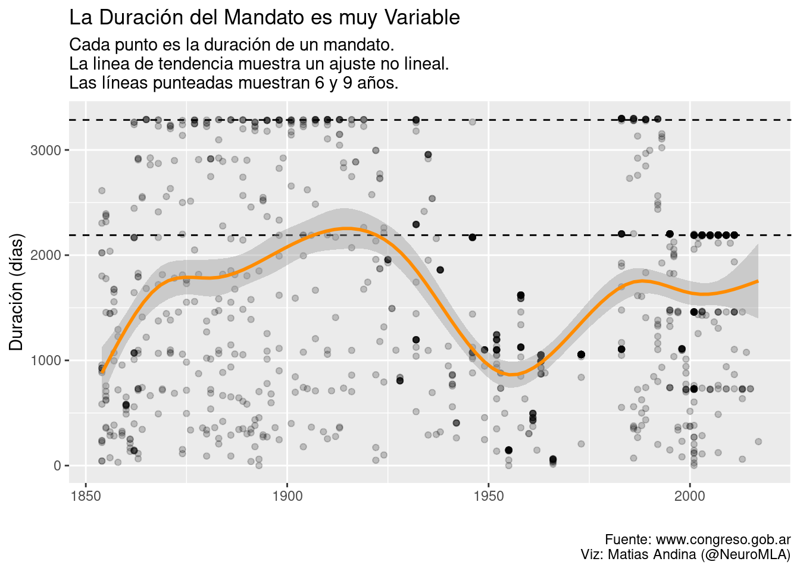
¿Quién quiere repetir?
La permanencia de un senador – o de cualquier otro político – en el cargo es un tema de debate interesante. En primer lugar, uno esperaría que cualquier trabajador con experienca y conocimiento sobre su área sea más eficiente y productivo. En criollo, si me tengo que operar de apendicitis mañana, prefiero un médico que haya realizado 1350 cirugías de apéndice que uno que haya realizado 122. Luego, si trasladamos este razonamiento a nuestras instituciones deberíamos querer que el Senado esté compuesto de políticos con muchos años de experiencia en la cámara alta.
El problema radica en identificar cuáles son los puestos que se parecen al del médico haciendo la misma cirugía y aquellos que no. Tomemos el ejemplo de los burócratas del Estado de carrera, los estadístas, los responsables de mantenimiento de infraestructura. Esta es la gente que hace funcionar el aparato, sin ellos, no hay implementación, no hay político que pueda hacer nada. Una cosa podría que identificarlos es que todos ellos deberían ser apolíticos y, como tales, deberían poder cumplir su labor siendo independientes del gobierno de turno3. Los investigadores del CONICET y los maestros también son buenos ejemplos de este tipo de empleados de Estado4.
En cambio, el rol de los integrantes del Poder Legislativo está contaminado por el hecho de que, entre otras cosas:
- Legislan su propio salario.
- Tienen la postestad de regular actividades económicas de manera conveniente.
- Tienen re-elección indefinida.
Por supuesto, podemos sumar el cúmulo de beneficios legales (como canjear viáticos por dinero en efectivo y discresionalidad de presupuesto) y aquellos no legales (en criollo, corrupción). Pero éste no es el lugar para analizar eso, focalicemos en los períodos. Los datos mandan, así que veamos qué es lo que dicen. Históricamente, la gran mayoría de senadores no repite su cargo.
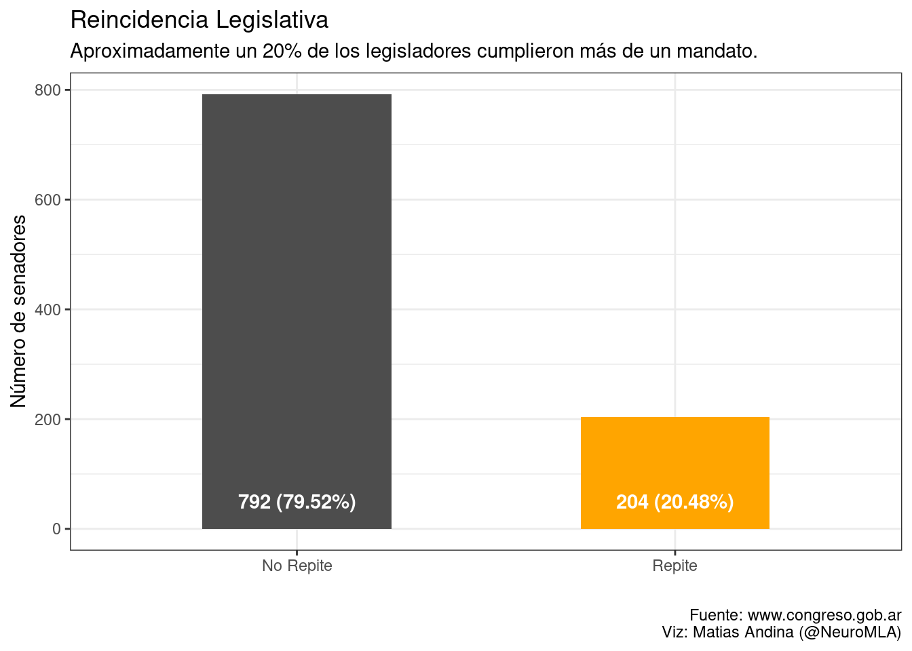
Repetidores por su nombre
Este fenómeno puede explicarse por múltiples causas. Antes de cualquier análsis, veamos quiénes son los repetidores.
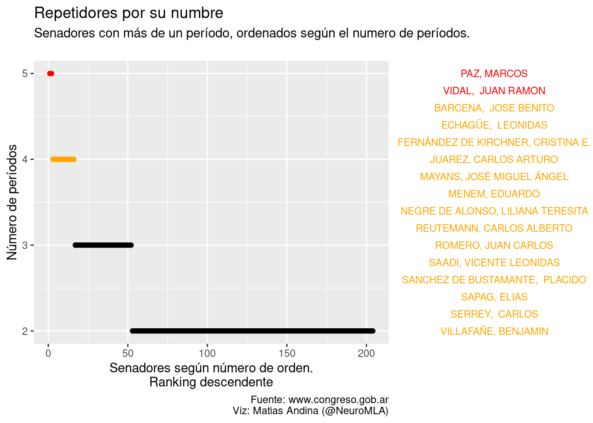
Acá vemos por primera vez algunos nombres que suenan más a calle o a localidad que a lo que hicieron. Pero también vemos algunos nombres bastante familiares y actuales. Recordemos que 4 o 5 mandatos son, según la duración de mandato actual, entre 24 y 30 años en el mismo puesto!
Máximos reemplazantes
Una curiosidad ingenua me llevó a preguntarme cuáles son los máximos reemplaznates. Me pregunté si, quizás, existía una caja con senadores de repuesto que pudieran cumplir los roles una vez que la figurita política de turno lograba conseguir los votos.
En otras palabras: ¿Es posible que exista un grupo de senadores comodín? Los datos presentan una triste realidad, una en la que la historia del Poder Legislativo Argentino está contaminada por sucesivas disoluciones. Llamémosles por su nombre, Golpes de Estado. Aún así, hay algunos senadores que han tomado la posta como suplente en reiteradas ocasiones.
| Reemplazante | Número de veces |
|---|---|
| DISOLUCION DEL P. LEGISLATIVO, | 269 |
| Sin Datos | 55 |
| ES SENADOR SUPLENTE, | 18 |
| VACANTE HASTA DISOLUC.P.L., | 15 |
| VACANTE HASTA FIN DEL PERIODO, | 9 |
| JUAREZ, CARLOS ARTURO | 5 |
| MAYANS, JOSÉ MIGUEL ÁNGEL | 5 |
| MORALES, GERARDO RUBÉN | 5 |
| ROMERO, JUAN CARLOS | 5 |
| VERNA, CARLOS ALBERTO | 5 |
Dias en el poder legislativo
Quiero hacer énfasis en la cantidad de días en el poder que implica repetir mandatos. Por eso, ordené a los senadores según el número de días que estuvieron (o aún están). Esta herramienta es simplemente para facilitar la visualización de los casos más extremos.
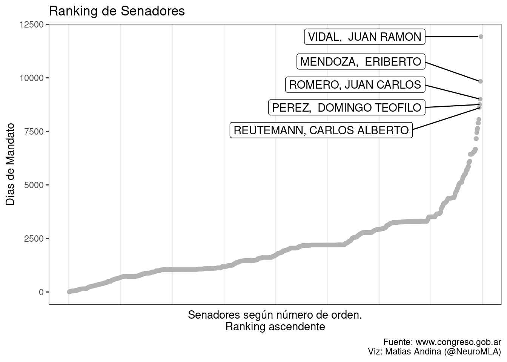
Sólo dos ejemplos, el resto de tarea:
Vidal fue gobernador de la provincia de Corrientes (dos veces), diputado, senador por 32 años (literalmente hasta su muerte, a los 80 años). Mendoza fue legislador provincial, diputado, gobernador de San Luis y luego senador por 27 años.
Independientemente de lo grandiosas o nefastas de sus contribuciones y el servicio a su País, queda claro que la carrera política les permitió perpetuarse de formas que no sólo son imposibles en la mayoría de otros gremios, sino que son mucho más peligrosas para la Nación.
Una cosa que resulta interesante es que pareciera que existen dos tipos de senadoes. Existe un quiebre entre aquellos que se quedan 1 o 2 mandatos y los demás, que se perpetúan en el cargo al mejor estilo Julio Grondona (#TodoPasa).
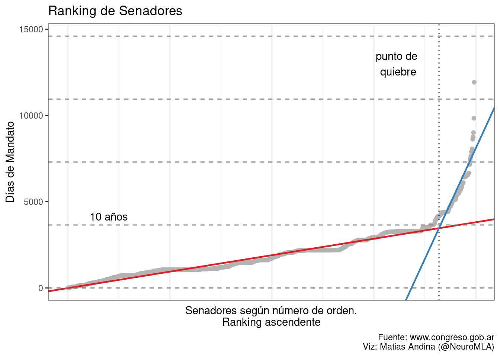
Es interesante que en ningún momento busqué los 10 años como punto de quiebre, este valor surgió de hacer una simple regresión partida. Podemos ver que los casos más extremos se desvían bastante de la regresión (sugiriendo un incremento aún más fuerte que uno lineal), pero me pareció una forma de simplificar el asunto: más de dos mandatos y estás para quedarte, no por un rato, para quedarte a vivir.
Esto es nuevo
A pesar que los ejemplos con el récord de días tienen más de un siglo, la realidad es que, desde el retorno a la democracia, el cierto grado de estabilidad institucional ha permitido que estas prácticas se exacerben.
En el siguiente gráfico muestra los períodos de los 60 legisladores con mayor cantidad de días en el poder. Vale recalcar que dos mandatos de 9 años te colocan muy arriba en el el ránking, mientras que necesitarías 3 mandatos completos con la nueva longitud de 6 años para llegar a la misma cantidad. Es fácil ver que, entre 1850 y 1930, existieron períodos con ciertos senadores ocupando las bancas de manera prolongada. Sin embargo, estamos hablando de un período político en donde ni siquiera se había legislado la Ley Saenz Peña o recién se había implementado. Ver tanto abuso no es sorprendente si el proceso es fundamentalmente anti-democrático y los períodos son tan largos.
Desde el último retorno a la democracia, un número importante de senadores se han perpetuado de manera impresionante, incluso integrando más de un partido político (ver también el color de la camiseta).
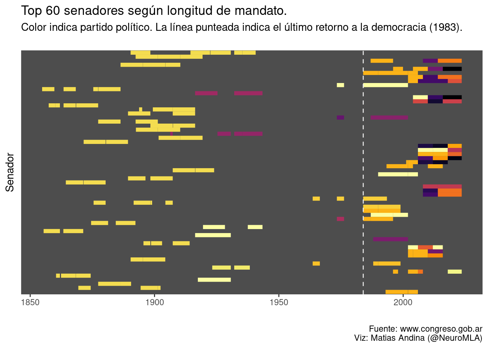
El color de la camiseta
Tradicionalmente, la UCR y el partido Justicialista son los grupos más convocantes. El siguiente gráfico muestra la evolución de las bancas para cada partido.
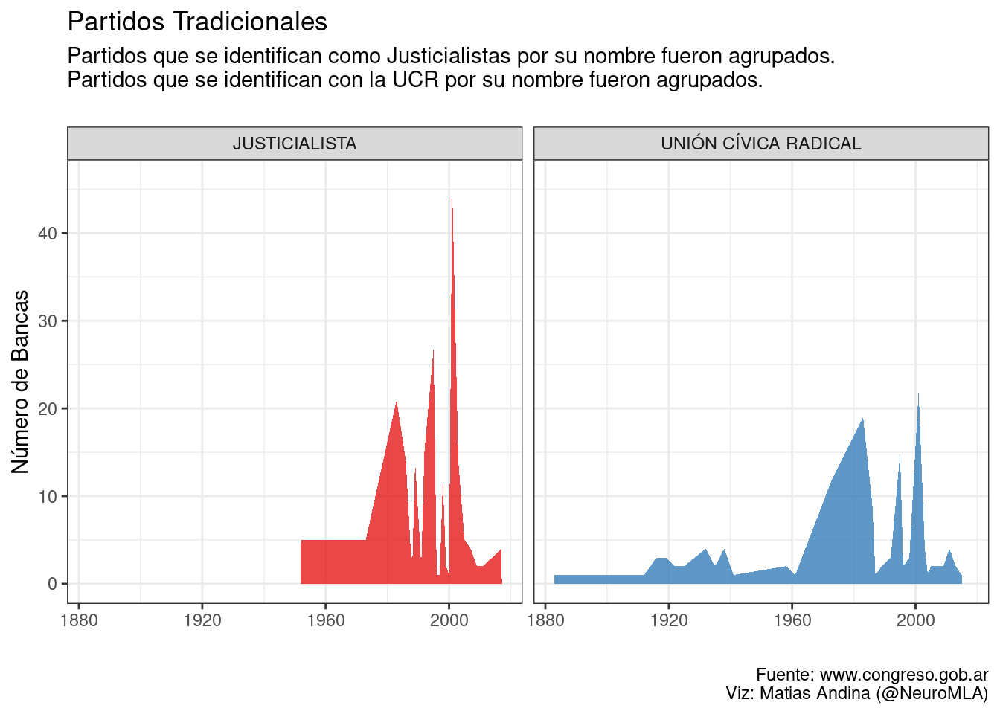
Además de demostrar lealtad a su partido, los senadores son representantes según su provincia. Uno esperaría que tengan fuerte arraigo y sean portavoces de las necesidades particulares de aquellos a los que representan. Esto, en gran medida, se ve reflejado en que la mayoría de senadores únicamente se presenta por una provincia. Sin embargo, hay senadores fueron electos en más de una provincia:
| Senador | Número de Provincias Representadas |
|---|---|
| ECHAGÜE, PASCUAL | 2 |
| ELIAS, ANGEL | 2 |
| FERNÁNDEZ DE KIRCHNER, CRISTINA E. | 2 |
| FERRE, PEDRO | 2 |
| GARCIA, ALFREDO | 2 |
| IGARZABAL, RAFAEL | 2 |
| IRIGOYEN, BERNARDO DE | 2 |
| LEGUIZAMÓN, MARÍA LAURA | 2 |
| LEIVA, MANUEL | 2 |
| ROCA, JULIO ARGENTINO | 2 |
| SAGUIER, FERNANDO | 2 |
| VILLANUEVA, BENITO | 2 |
Un hecho más interesante es el cambio de partido. No me queda claro si esto habla de la inestabilidad en el tiempo de los partidos o de que algunos senadores se orientan con la corriente (por ponerlo de manera políticamente correcta).
Los siguientes senadores ejercieron cargo representando a más de un partido:
| Senador | Número de Partidos Representadas |
|---|---|
| ALPEROVICH, JOSÉ JORGE | 2 |
| BASUALDO, ROBERTO GUSTAVO | 3 |
| BLAS, INÉS IMELDA | 2 |
| BRAVO, LEOPOLDO | 2 |
| BRITOS, ORALDO NORVEL | 2 |
| CARO, JOSE ARMANDO | 2 |
| CASTILLO, OSCAR ANÍBAL | 3 |
| CASTRO, MARÍA ELISA | 2 |
| CLOSS, MAURICE FABIÁN | 2 |
| COLAZO, MARIO JORGE | 2 |
| ELÍAS DE PEREZ, SILVIA BEATRIZ | 2 |
| ESCUDERO, SONIA MARGARITA | 2 |
| FELLNER, LILIANA BEATRIZ | 2 |
| FERIS, GABRIEL | 2 |
| FERNÁNDEZ DE KIRCHNER, CRISTINA E. | 3 |
| FERNÁNDEZ, NICOLÁS ALEJANDRO | 2 |
| FUENTES, MARCELO JORGE | 2 |
| GARCIA, ALFREDO | 2 |
| GIACOPPO, SILVIA DEL ROSARIO | 2 |
| GIUSTINIANI, RUBÉN HÉCTOR | 2 |
| GONZÁLEZ, MARÍA TERESA MARGARITA | 2 |
| GUASTAVINO, PEDRO GUILLERMO ÁNGEL | 2 |
| GUINLE, MARCELO ALEJANDRO HORACIO | 2 |
| JENEFES, GUILLERMO RAÚL | 2 |
| LATORRE, ROXANA ITATÍ | 2 |
| LEGUIZAMÓN, MARÍA LAURA | 2 |
| MARINO, JUAN CARLOS | 3 |
| MARTIARENA, JOSE H. | 3 |
| MAYANS, JOSÉ MIGUEL ÁNGEL | 3 |
| MAZA, ADA MERCEDES | 2 |
| MENEM, CARLOS SAÚL | 2 |
| MORALES, GERARDO RUBÉN | 2 |
| MURGUIA, EDGARDO P. | 2 |
| NEGRE DE ALONSO, LILIANA TERESITA | 3 |
| PETCOFF NAIDENOFF, LUIS CARLOS | 2 |
| PICHETTO, MIGUEL ÁNGEL | 3 |
| REUTEMANN, CARLOS ALBERTO | 3 |
| RODRÍGUEZ SAÁ, ADOLFO | 3 |
| ROMERO, JUAN CARLOS | 3 |
| SAADI, VICENTE LEONIDAS | 3 |
| SANZ, ERNESTO RICARDO | 2 |
| SNOPEK, CARLOS | 2 |
| TEISAIRE, ALBERTO | 2 |
| VIUDES, ISABEL JOSEFA | 2 |
Y luego, 2001
Explosión de partidos
Si esto no les gusta, hagan un partido político, ganen las elecciones y después hagan lo que quieran – CFK, 2012
Desde el comienzo de los tiempos, el número total de partidos registrados que lograron obtener una banca en el Senado es de 109 partidos.
| Etapa | Partidos (#) |
|---|---|
| pre-2001 | 47 |
| post-2001 | 70 |
Ajuste por alianzas
Aún cuando ajustamos por las múltiples alianzas (los justicialistas, la UCR y las distintas formas de Kirchnerismo y PRO). Las diferencias entre antes y después del 2001 son impresionantes.
| Etapa | Partidos (#) |
|---|---|
| post-2001 | 48 |
| pre-2001 | 41 |
Esta etapa también viene de la mano de la desaparición de los partidos tradicionales y la aparición de otros5.
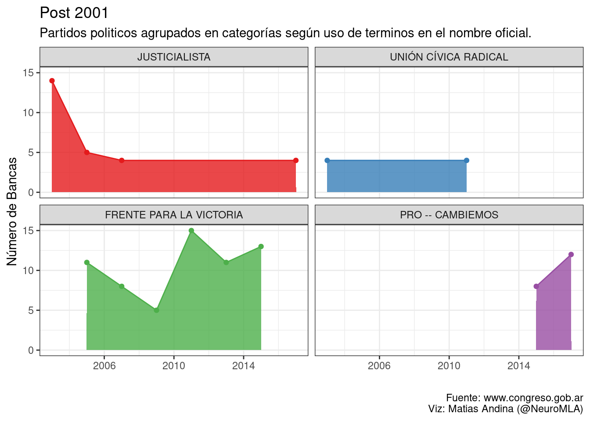
Partidos por su nombre
Por pura diversión, imaginemos que queremos crear un partido político en argentina. Pero no queremos un partido cualquiera, queremos un partido que logre poner bancas en el senado. Si nos olvidamos de la política y las promesas de campaña, ¿cuáles son las palabras que deberían aparecer en el nombre para lograr nuestro cometido?
La red de partidos
El siguiente gráfico muestra cómo están conectados los senadores con los distintos partidos. Es interesante ver la corriente ideológica del justicialismo, desde el Peronismo hasta el Frente para la Victoria. También es bastante claro el bunker de la UCR.
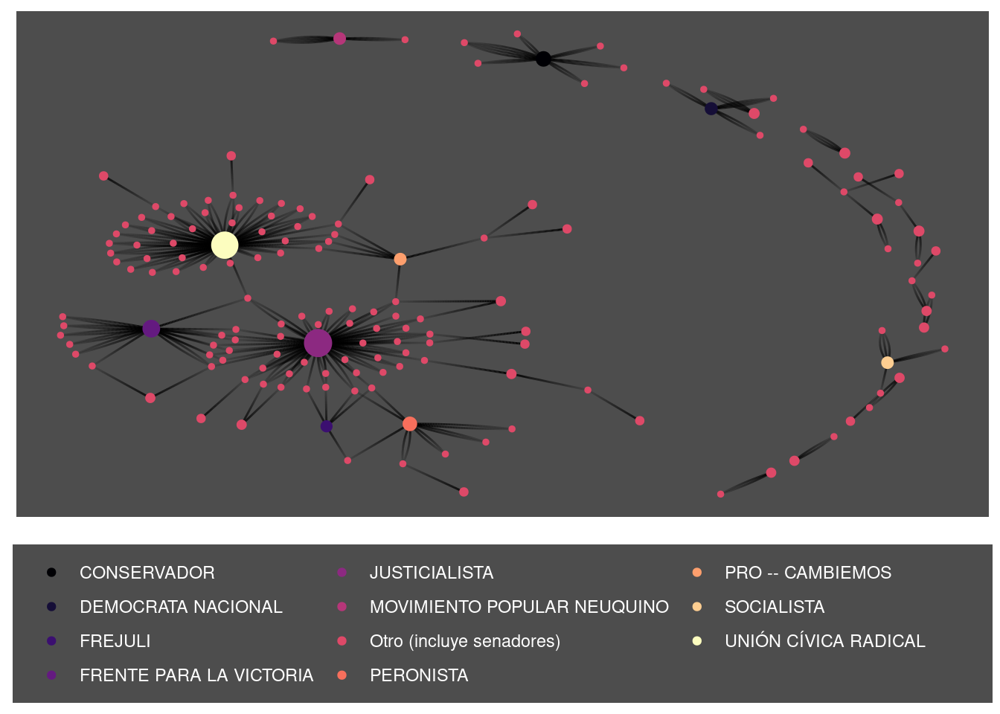
Diputados

La base de diputados comienza en 2007-12-10. Por esto no realice análisis como el de los senadores.
Algunas cosas que esta base sí tiene son datos de género.
| Género | Número de diputados |
|---|---|
| Femenino | 433 |
| Masculino | 734 |
Si bien la ley exige presencia de mujeres en las listas, aún estamos lejos de alcanzar un 50% de representación femenina.
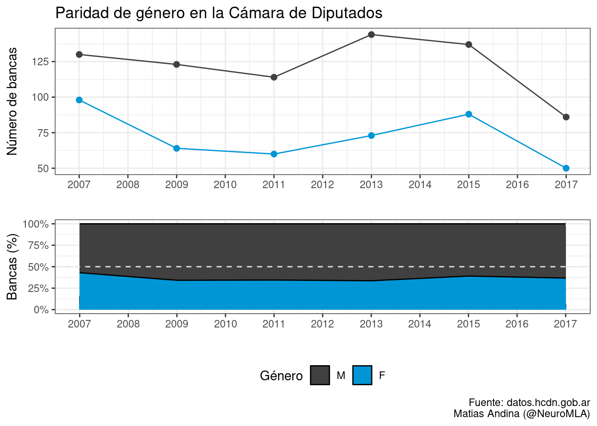
Un dato interesante es la fuerte presencia de partidos mayoritarios, y una cámara llena de minorías, con partidos que sólo consiguieron un representante.
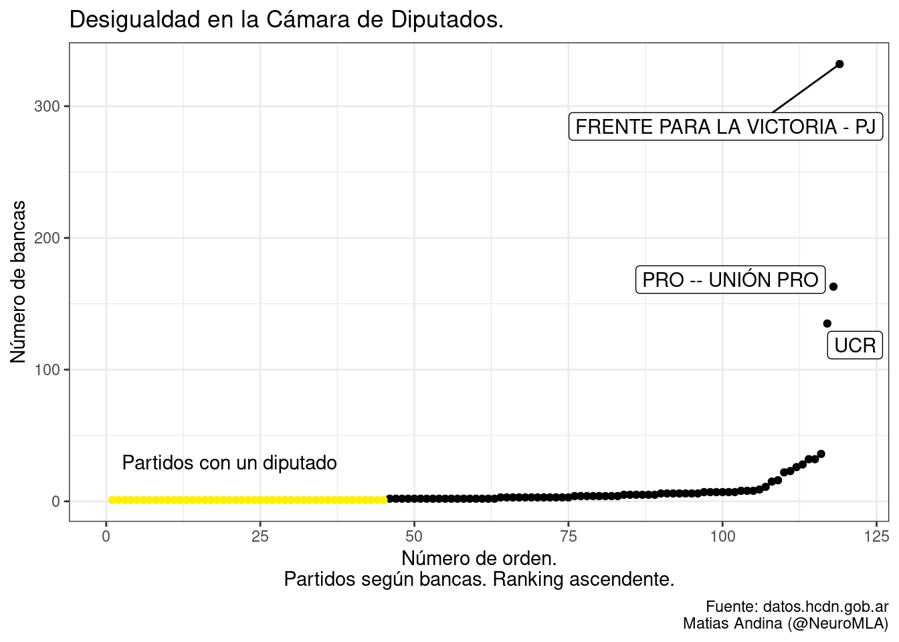
Footnotes
Desde Wikipedia a su pantalla: “Los requisitos para ser elegidos senador son: tener la edad de treinta años, haber sido seis años ciudadano de la Nación, y ser natural de la provincia que lo elija, o con dos años de residencia inmediata en ella.”↩︎
Ni hablar de una coronaria a corazón abierto, no?↩︎
Cuando digo apolíticos no me refiero a sus conviciones personales e inclinaciones políticas. Al menos en mi mente, el funcionamiento interno de ciertas dependencias del Estado debe ser autónomo. Un dato es un dato (sea la masa de un átomo o el desempleo), un docente o un estadísta del INDEC no deberían estar afectados en su labor por el partido de turno.↩︎
Incluso en estas circunstancias, no considero que los investigadores o los maestros deban estar haciendo siempre la misma tarea. Al contrario, sendos gremios deberían funcionar con una estructura que permita aprovechar la experiencia para el mejor funcionamiento en vez de promover una jerarquía absurda por la jerarquía misma. Una científica jóven quizás esté mejor capacitada para hacer experimentos con sus propias manos. Un maestro jóven para interactuar con alumnos sin que haya un salto generacional muy pronunciado. Aquellos que tengan mayor experiencia, quizás pueda impulsar cambios estructurales para mejorar aspectos que no estén funcionando.↩︎
Para simplificar, elegí partidos que lograron obtener más de 3 bancas.↩︎
Reuse
Citation
BibTeX citation:
@online{andina2019,
author = {Andina, Matias},
title = {Los Mismos de Siempre},
date = {2019-09-10},
url = {https://mauribo2.github.io/WebSite/posts/2019-09-10-los-mismos-de-siempre/},
langid = {en}
}
For attribution, please cite this work as:
Andina, Matias. 2019. “Los Mismos de Siempre.” September
10. https://mauribo2.github.io/WebSite/posts/2019-09-10-los-mismos-de-siempre/.